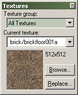

Toolbars: Textures toolbar

Use the Texture group text box to view a different subset of textures. You will have a choice between viewing all available materials, or viewing materials from individual mod directories.
Texture Group
Use the Texture group text box to view a different subset of textures. You will have a choice between viewing all available materials, or viewing materials from individual mod directories. Pick an entry from the list, and only that groups of materials textures will be available for selection.
Current Texture
The Current Texture lists the last eight materials used, then continues with a list of the remaining available materials (as dictated by the Texture group selection).
Browse...
The Browse... button opens the Texture Browser dialog, where you can select from all available materials.
Replace
The Replace button will bring up the Replace Textures dialog, where you can can search and replace materials for one another.
© 2004 Valve Corporation. All rights reserved. Valve, the Valve logo, Half-Life, the Half-Life logo, the Lambda logo, Steam, the Steam logo, Team Fortress, the Team Fortress logo, Opposing Force, Day of Defeat, the Day of Defeat logo, Counter-Strike, the Counter-Strike logo, Source, the Source logo, Hammer and Counter-Strike: Condition Zero are trademarks and/or registered trademarks of Valve Corporation. Microsoft and Visual Studio are trademarks and/or registered trademarks of Microsoft Corporation. All other trademarks are property of their respective owners.